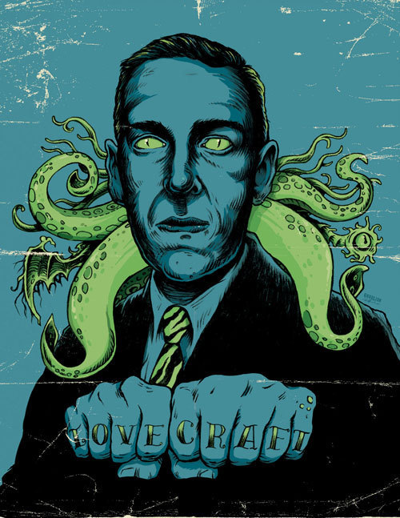

Site Feito em homenagem a obra de H.P. Lovecraft, aqui irei adcionar varios conteudos aprendidos em aula, executados de maneira aleatoria, inicialmente minha intenção era ser um bestiario usando todo o conteudo aprendido para executar a ideia de uma forma diferente, a principio, hoje estou adcionando um post de venda de um necronomicon. log 31/10/2022
|  |
Howard Phillips Lovecraft (Providence, Rhode Island, 20 de agosto de 1890 — Providence, Rhode Island, 15 de março de 1937), mais conhecido como H. P. Lovecraft, foi um escritor estadunidense que revolucionou o gênero de terror, ficção estranha, científica, fantasia e horror, atribuindo-lhe elementos fantásticos típicos dos gêneros de fantasia e ficção científica, sendo mais conhecido por sua criação dos Mitos de Cthulhu. [1] Lovecraft originou o ciclo de histórias que, posteriormente, foram agrupadas nos Mitos de Cthulhu e o grimório fictício conhecido como Necronomicon — atribuído em suas histórias a um estranho árabe chamado Abdul Al Hazred — através do qual os seres humanos em suas histórias entravam em contato com o panteão de entidades criadas pelo autor. Lovecraft era assumidamente conservador e anglófilo, o que pode ser observado em seu poema An American To Mother England,[2] publicado em janeiro de 1916.[2] Seu estilo literário emprega arcaísmos, vocabulário e ortografia marcadamente britânicos — fato que contribui para aumentar a atmosfera de suas histórias, como no conto O Caso de Charles Dexter Ward, que contêm referências a personagens que viveram antes da independência das Treze Colônias, bem como a comércios existentes entre os séculos XVII e XVIII. |